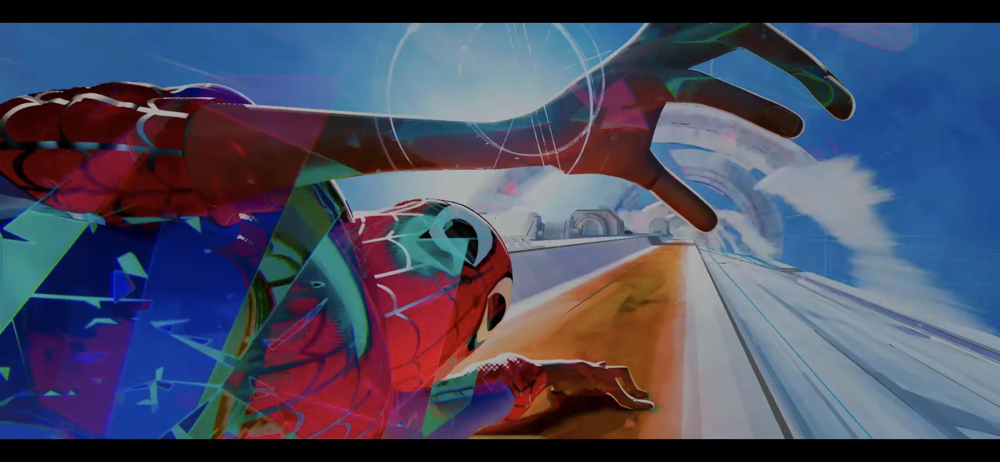
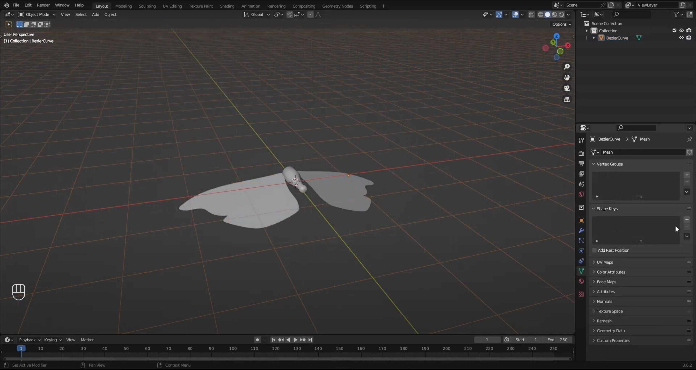

Blogs
Brainstorm Blog 1
One of the ideas that I had was to make an A.I generated an image of a man and a robot reaching with their hands to grab one another. It would reference the way that God and Adam were reaching out for each other in The Creation of Adam by Michaelangelo. I did actually make an art piece like this during my studio art one class in which I generated an image with Dall-E. The reason that I wanted to do this was because I wanted to highlight the imperfections that artificial intelligence is known for. Specifically, hands are notoriously bad at being drawn by artificial intelligence, so focusing on that subject matter was important for me and the piece, which is why I decided to reference The Creation of Adam. Another aspect that I really liked about that was how man was almost playing God and breathing life into a new species. I've always found the philosophy behind artificial intelligence and consciousness fascinating. Things like the Turing Test, self-awareness, etc... are all milestones that artificial consciousness should (and potentially already have) crossed. With this idea specifically, I think I'd like to generate more A.I images, of this man and machine reaching out to one another, to see how much more evolved artificial intelligence has come. Dall-E is unfortunately discontinued, but parties other than OpenAI have good generators and I want to still venture into that seeing how messed up the fingers can be with artificial intelligence. Below is the image that I made in the studio art one class.

Reading Blog 1 (Glitch Art Manifest)
I thought that the reading was super interesting and the text visually glitching out was a super fun take on the book medium. It made it much more fun and engaging to read than most of the other readings that I have in my other classes. In Menkman's essay, she argues that the art of glitch is partially recognizing that glitches were originally failures and unintentional. With this history, artists can use that as a metaphor to speak in any context and have their own take on failures, whether intentional or accidental. And with glitches specifically, it can especially speak in a technological or digital context. This essay really reminded me of the animated movie, Spider-Man: Across the Spider-Verse. In it, the protagonist Spider-Man, Miles Morales, is told that he was never supposed to be Spider-Man and that we was a mistake, an anomoly. This is a big theme in the movie, and it just so happens to be that when a character is in another universe, they "glitch". This is to indicate that they're not supposed to be in this alternate universe, and this glitch visual/plot device and theme of being a mistake is something I've never really put together before. In fact, I think we can follow the manifesto's logic one step further and see glitches as something positive, an oppurtunity to make something from failures. While I don't think that idea itself is in the Spider-Verse franchise yet, I could see it heading towards that way.
Brainstorm Blog 2
For my Blender project, I think I'd like to do something Halloween themed. I searched online and saw a tutorial for moths that are animated and have their wings flapping. I think it could be fairly easy to change this into a bat, but even starting the tutorial seems to be somewhat of a problem since I'm really struggling with using the bezier curve. Otherwise, I think it should be nice to have the bats flapping around the person using the TikTok filter. I'm unsure how this will transfer into Effect House and then onto TikTok, but I'm hoping it won't be too bad on the system. I don't really have any ideas for a second project yet, and I'm kind of just hoping that this first one will be impressive enough to fulfill the requirements, especially since I'm not super familiar with Blender as a whole. Maybe something with horns would do nicely, or a pumpkin jack o lantern could be fun. I don't have any deep meaning attached to this project, I just wanted to do something fun and with bats. It's just occured to me that the bats will likely be flying through the user's head, but that should be fine. I'm thinking with Effect House, I really liked the vignette effect and I think it could add an eerie Halloween vibe that I'm going for. I could even make the user's eyes red so that they become a vampire of sorts. I wonder if I can make the teeth extend and maybe change their hair to give them a more Dracula vibe. Maybe I can give them a cape as well. Below is a picture of the moth tutorial.
Brainstorm Blog 3
I think this is the most exciting project, especially having the exhibition in Denver. I really liked the example of the painting having parts of it getting highlighted with different effects over it from the projecter, especially the bodies of water having some water-like effect over them. I think I want to do something similar, but I don't have any paintings like that in which I can kind of highlight certain aspects, so I might have to something much simpler. Something that I was thinking was doing a simple animation with the animation from the projector itself being the main focus instead of the painting. I want to do something that incorporates the digital aspect of this project and not something that's just physical art though. I also want my project to be really big and grand so that I can take advantage of the projector size. I think that would be super cool in an exhibition as well. After knowing that the show title's going to be lumen beings, I think an animation of two humans connecting with some sort of light as a spark could make sense.